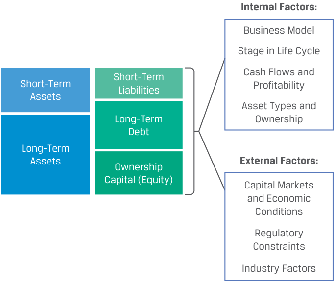
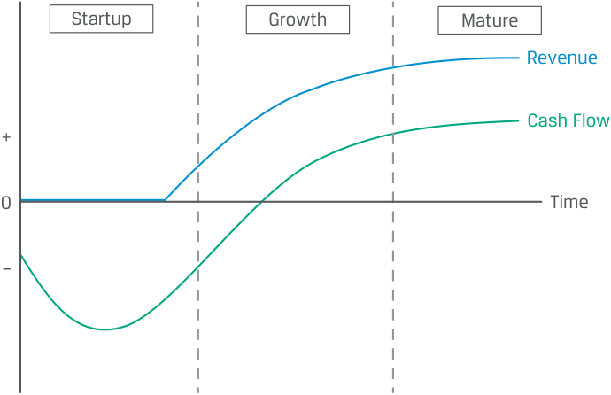

Learning Module 6 Capital Structure - Part 2: Factors Affecting Capital Structure
Volume 3: Corporate Issuers
Learning Module 6 Capital Structure
Part 2/4: Factors Affecting Capital Structure (PDF Pages 188–198)
Tập 3: Tổ chức Phát hành Doanh nghiệp (Corporate Issuers)
Học phần 6: Cấu trúc Vốn (Capital Structure)
Phần 2/4: Các Yếu tố Ảnh hưởng đến Cấu trúc Vốn (Factors Affecting Capital Structure) (Trang PDF 188–198)
We = $800,000/$1,200,000 = 0.67.
Thus, the book value weight for debt (0.40) is higher than the market value weight (0.33).
Do đó, tỷ trọng giá trị sổ sách của nợ (0.40) cao hơn tỷ trọng giá trị thị trường (0.33).
- If the marginal corporate tax rate is 20% and the stock price increases to $25, the WACC for Company X is closest to:
A. 7.60%.
- Nếu thuế suất thuế thu nhập doanh nghiệp biên là 20% và giá cổ phiếu tăng lên $\$25$, thì WACC của Công ty X gần nhất với mức:
-
A. 7.60%.
-
B. 8.26%.
-
C. 8.55%.
B. 8.26%.
Lời giải:
C. 8.55%.
B là đáp án đúng.
Solution:
Tỷ trọng giá trị sổ sách được tính như sau:
B is correct.
The book value weights are computed as follows:
Wd = $400,000/$1,000,000 = 0.40.
We = $600,000/$1,000,000 = 0.60.
Giá trị thị trường của vốn chủ sở hữu bằng $\$25 \times 40,000 \text{ cổ phiếu} = \$1,000,000$. Tỷ trọng giá trị thị trường được tính như sau:
The market value of equity is equal to $25 × 40,000 shares = $1,000,000. The market value weights are computed as follows:
Wd = $400,000/$1,400,000 = 0.29.
We = $1,000,000/$1,400,000 = 0.71.
The appropriate weights for the WACC calculation are the market weights Company X’s WACC, using the market weights, is calculated as follows:
Các trọng số phù hợp cho phép tính WACC là tỷ trọng thị trường. WACC của Công ty X, sử dụng tỷ trọng thị trường, được tính như sau:
WACC = (weighting of debt * cost of debt) + (weighting of equity * cost of equity)
= (0.29) (5%)(1-0.2) +(0.71)(10%) = 8.26%
- Fill in the blanks using the following two terms:
- Điền vào chỗ trống bằng cách sử dụng hai thuật ngữ sau:
-
cao hơn (higher)
-
thấp hơn (lower)
higher
lower
Giá trị cổ đông được gia tăng nhờ tỷ suất sinh lợi trên vốn đầu tư __ và một cấu trúc vốn dẫn đến WACC __.
Shareholder value is increased by a __ return on investment and a capital structure that results in a __ WACC. Solution:
Lời giải:
Shareholder value is increased by a highe r return on investment and a capi- tal structure that results in a lower WACC.
Giá trị cổ đông được gia tăng nhờ tỷ suất sinh lợi trên vốn đầu tư cao hơn (higher) và một cấu trúc vốn dẫn đến WACC thấp hơn (lower).
3
3
FACTORS AFFECTING CAPITAL STRUCTURE
CÁC YẾU TỐ ẢNH HƯỞNG ĐẾN CẤU TRÚC VỐN (FACTORS AFFECTING CAPITAL STRUCTURE)
explain factors affecting capital structure and the weighted-average cost of capital
Mục tiêu học tập: giải thích các yếu tố ảnh hưởng đến cấu trúc vốn (capital structure) và chi phí sử dụng vốn bình quân gia quyền (weighted-average cost of capital)
Issuers desire a capital structure that minimizes its weighted-average cost of capital and generally matches the duration of its assets. The total amount and type of financing needed are generally determined by the issuer’s business model and its position in the corporate life cycle. The costs of debt and equity are determined in financial markets by top-down factors that affect debt and equity markets generally, as well as investors’ assessments of issuer-specific risk factors, as summarized in Exhibit 1.
Các tổ chức phát hành mong muốn một cấu trúc vốn giúp tối thiểu hóa chi phí sử dụng vốn bình quân gia quyền (WACC) và nhìn chung khớp với thời lượng (duration) của tài sản. Tổng quy mô và loại hình tài trợ cần thiết thường được quyết định bởi mô hình kinh doanh (business model) của tổ chức phát hành và vị trí của doanh nghiệp trong vòng đời doanh nghiệp (corporate life cycle). Chi phí nợ và chi phí vốn chủ sở hữu được xác định trên thị trường tài chính bởi các yếu tố từ trên xuống (top-down factors) ảnh hưởng đến thị trường nợ và vốn chủ sở hữu nói chung, cũng như các đánh giá của nhà đầu tư về các yếu tố rủi ro đặc thù của tổ chức phát hành (issuer-specific risk factors), như được tóm tắt trong Minh họa 1.
Exhibit 1: Factors Affecting Capital Structure
Minh họa 1: Các Yếu tố Ảnh hưởng đến Cấu trúc Vốn (Exhibit 1: Factors Affecting Capital Structure)

Chú thích hình ảnh: - Bảng cân đối kế toán: Tài sản Ngắn hạn (Short-Term Assets), Tài sản Dài hạn (Long-Term Assets); Nợ phải trả Ngắn hạn (Short-Term Liabilities), Nợ Dài hạn (Long-Term Debt), Vốn Chủ sở hữu (Ownership Capital / Equity). - Các Yếu tố Nội tại (Internal Factors): Mô hình Kinh doanh (Business Model), Giai đoạn trong Vòng đời (Stage in Life Cycle), Dòng tiền và Khả năng Sinh lời (Cash Flows and Profitability), Loại Tài sản và Quyền Sở hữu (Asset Types and Ownership). - Các Yếu tố Bên ngoài (External Factors): Thị trường Vốn và Điều kiện Kinh tế (Capital Markets and Economic Conditions), Các Ràng buộc Pháp lý (Regulatory Constraints), Các Yếu tố Ngành (Industry Factors).
Determinants of the Amount and Type of Financing Needed
Các Yếu tố Quyết định Quy mô và Loại hình Tài trợ Cần thiết (Determinants of the Amount and Type of Financing Needed)
The total amount and type of financing needed (thus, the weightings in the WACC calculation) generally depend on the issuer’s business model and its position in the corporate life cycle.
Tổng quy mô và loại hình tài trợ cần thiết (do đó là các trọng số trong phép tính WACC) nhìn chung phụ thuộc vào mô hình kinh doanh của tổ chức phát hành và vị trí của nó trong vòng đời doanh nghiệp.
Capital-Intensive Businesses
_Các Doanh nghiệp Thâm dụng Vốn (Capital-Intensive Businesses)_
Some businesses require a lot of assets—for example, those in utilities; transportation; real estate; some types of manufacturing, such as semiconductors; and natural resource production. These are known as capital-intensive businesses . This need for lots of assets is evident from low asset turnover (low sales-to-total-assets ratio), high capital expenditures to sales, and high net-working-capital-to-sales ratios.
Một số doanh nghiệp đòi hỏi rất nhiều tài sản—ví dụ, các doanh nghiệp trong ngành tiện ích (utilities); giao thông vận tải (transportation); bất động sản (real estate); một số loại hình sản xuất chế tạo, chẳng hạn như chất bán dẫn (semiconductors); và khai thác tài nguyên thiên nhiên (natural resource production). Những doanh nghiệp này được gọi là các doanh nghiệp thâm dụng vốn (capital-intensive businesses). Nhu cầu về lượng lớn tài sản này thể hiện rõ qua vòng quay tổng tài sản thấp (low asset turnover — tỷ số doanh thu trên tổng tài sản thấp), tỷ số chi tiêu vốn trên doanh thu cao (high capital expenditures to sales), và tỷ số vốn lưu động ròng trên doanh thu cao (high net-working-capital-to-sales ratios).
While many businesses were once vertically integrated and more capital intensive, many have separated into multiple, focused companies where the capital-intensive business is separate from the customer-facing brand or service businesses. The businesses then have contractual rather than ownership relations. For example, Hilton Worldwide, one of the world’s largest hotel companies, operates almost all its hotel rooms through long-term franchise or management agreements, with the hotels themselves owned by others. Similarly, NVIDIA designs and tests its products but does not manufacture semiconductor wafers; that capital-intensive activity is instead done by Taiwan Semiconductor Manufacturing Company Limited and Samsung Electronics Co. Ltd.
Mặc dù nhiều doanh nghiệp trước đây từng được tích hợp theo chiều dọc (vertically integrated) và thâm dụng vốn nhiều hơn, nhưng nhiều doanh nghiệp đã tách thành nhiều công ty chuyên biệt, trong đó mảng kinh doanh thâm dụng vốn được tách biệt khỏi mảng kinh doanh thương hiệu tiếp xúc trực tiếp với khách hàng hoặc dịch vụ. Khi đó, các doanh nghiệp này có mối quan hệ hợp đồng (contractual relations) thay vì quan hệ sở hữu (ownership relations). Ví dụ, Hilton Worldwide, một trong những công ty khách sạn lớn nhất thế giới, vận hành gần như toàn bộ số phòng khách sạn của mình thông qua các thỏa thuận nhượng quyền thương mại (franchise agreements) hoặc hợp đồng quản lý dài hạn, còn bản thân các khách sạn thuộc quyền sở hữu của các bên khác. Tương tự, NVIDIA thiết kế và thử nghiệm các sản phẩm của mình nhưng không trực tiếp sản xuất tấm bán dẫn (semiconductor wafers); thay vào đó, hoạt động thâm dụng vốn này được thực hiện bởi Công ty Cổ phần Sản xuất Chất bán dẫn Đài Loan (TSMC – Taiwan Semiconductor Manufacturing Company Limited) và Công ty Điện tử Samsung (Samsung Electronics Co. Ltd.).
EXAMPLE 1
VÍ DỤ 1 (EXAMPLE 1)
Leases as Debt Financing
Thuê Tài sản như một Hình thức Tài trợ bằng Nợ (Leases as Debt Financing)
Many business models require fungible and tangible assets, such as
Nhiều mô hình kinh doanh đòi hỏi các tài sản hữu hình và có tính thay thế tương đương (fungible and tangible assets), chẳng hạn như:
-
office space,
-
data centers,
-
IT devices, such as PCs, phones, and tablets,
-
aircraft, and
-
automobiles.
-
văn phòng làm việc (office space),
-
trung tâm dữ liệu (data centers),
-
các thiết bị CNTT (IT devices), chẳng hạn như máy tính cá nhân (PC), điện thoại và máy tính bảng,
-
máy bay (aircraft), và
-
ô tô (automobiles).
While companies could buy these assets for cash or borrow cash and buy them, a more common approach is to lease them from a lessor, such as a bank or specialized asset lessor—for example, AerCap Holdings N.V., which leases over 1,000 aircraft to airlines.
Mặc dù các công ty có thể mua những tài sản này bằng tiền mặt hoặc vay tiền mặt để mua chúng, nhưng một cách tiếp cận phổ biến hơn là thuê chúng từ một bên cho thuê (lessor), chẳng hạn như ngân hàng hoặc công ty cho thuê tài sản chuyên biệt—ví dụ: AerCap Holdings N.V., công ty cho các hãng hàng không thuê hơn 1,000 máy bay.
A lease is like a loan, but rather than receiving cash in exchange for interest and principal payments, the borrower (lessee) receives an asset in exchange for lease payments. Implicit in the lease is an interest rate that is often much lower than what the lessee would have been lent cash for, because the leased asset is collateral and because lessors are often large companies that can borrow cheaply.
Hợp đồng thuê (lease) giống như một khoản vay, nhưng thay vì nhận tiền mặt để đổi lấy các khoản thanh toán gốc và lãi, bên đi vay (bên thuê – lessee) nhận một tài sản để đổi lấy các khoản thanh toán tiền thuê (lease payments). Ngầm định trong hợp đồng thuê là một mức lãi suất thường thấp hơn nhiều so với mức lãi suất mà bên thuê sẽ phải chịu nếu vay tiền mặt, bởi vì tài sản thuê đóng vai trò là tài sản thế chấp (collateral) và vì bên cho thuê thường là các công ty lớn có khả năng vay vốn với chi phí rẻ.
Another similar approach to financing fungible and tangible assets is through secured debt. By using the asset as collateral for a loan or bond, the issuer may be able to obtain a far lower cost of debt than on an unsecured basis. This is true of a downtown office building but probably not for a highly specialized factory in a remote location or a consumable asset that has little value to investors as collateral.
Một cách tiếp cận tương tự khác để tài trợ cho các tài sản hữu hình và có tính thay thế tương đương là thông qua nợ có tài sản đảm bảo (secured debt). Bằng cách sử dụng tài sản làm tài sản thế chấp cho một khoản vay hoặc trái phiếu, tổ chức phát hành có thể đạt được mức chi phí nợ thấp hơn rất nhiều so với hình thức không có tài sản đảm bảo (unsecured basis). Điều này đúng với một tòa nhà văn phòng ở trung tâm thành phố nhưng có lẽ không đúng với một nhà máy chuyên dụng cao ở vùng sâu vùng xa hoặc một tài sản tiêu hao có ít giá trị đối với các nhà đầu tư khi làm tài sản thế chấp.
The capital structures of some firms can be regulated by governments. For example, banks must adhere to regulatory capital standards by maintaining a certain percentage of equity as a proportion of assets. Similarly, regulatory oversight of public utility companies by local governments can influence their capital structures through rules and regulations relating to setting pricing/rates. This generally increases WACC because it results in higher equity financing.
Cấu trúc vốn của một số doanh nghiệp có thể được quản lý bởi chính phủ. Ví dụ, các ngân hàng phải tuân thủ các tiêu chuẩn vốn pháp định (regulatory capital standards) bằng cách duy trì một tỷ lệ phần trăm vốn chủ sở hữu nhất định trên tổng tài sản. Tương tự, sự giám sát quản lý đối với các công ty tiện ích công cộng bởi chính quyền địa phương có thể ảnh hưởng đến cấu trúc vốn của họ thông qua các quy tắc và quy định liên quan đến việc ấn định giá/biểu phí (setting pricing/rates). Điều này nhìn chung làm tăng WACC vì nó dẫn đến việc phải sử dụng nhiều nguồn tài trợ bằng vốn chủ sở hữu hơn.
“Capital-Light” Businesses
Các Doanh nghiệp “Ít Thâm dụng Vốn” (“Capital-Light” Businesses)
Some business models—notably in the technology sector, as well as service businesses that have shed their capital-intensive businesses—have low capital needs (i.e., high fixed asset turnover and/or low capital-expenditures-to-sales-ratios), known as capital-light businesses , or asset-light businesses. Their assets might be primarily composed of excess cash and some intangibles. This reflects several factors:
Một số mô hình kinh doanh—đáng chú ý là trong lĩnh vực công nghệ, cũng như các doanh nghiệp dịch vụ đã tách bỏ các mảng kinh doanh thâm dụng vốn—có nhu cầu vốn thấp (tức là vòng quay tài sản cố định cao và/hoặc tỷ số chi tiêu vốn trên doanh thu thấp), được gọi là các doanh nghiệp ít thâm dụng vốn (capital-light businesses), hay các doanh nghiệp nhẹ về tài sản (asset-light businesses). Tài sản của họ có thể chủ yếu bao gồm tiền mặt dư thừa và một số tài sản vô hình (intangibles). Điều này phản ánh một số yếu tố:
-
They simply operate a network for others that own assets and thus do not need to seek financing for them from financial markets. For example, Uber and Airbnb operate global ridesharing and hospitality networks, respectively, that connect drivers and hosts who own the automobile and real estate assets with riders and guests. The companies earn commissions and fees from network users.
-
The company may charge its customers upfront for services or have a very short or negative cash conversion cycle, thus obviating the need for external financing for working capital.
-
Họ chỉ đơn giản là vận hành một mạng lưới cho những bên khác sở hữu tài sản và do đó không cần tìm kiếm nguồn tài trợ cho các tài sản đó từ thị trường tài chính. Ví dụ, Uber và Airbnb lần lượt vận hành các mạng lưới chia sẻ xe và lưu trú toàn cầu, kết nối các tài xế và chủ nhà (những người sở hữu tài sản ô tô và bất động sản) với hành khách và khách lưu trú. Các công ty này thu hoa hồng và phí từ người dùng mạng lưới.
-
Công ty có thể thu tiền trả trước của khách hàng cho các dịch vụ hoặc có chu kỳ chuyển đổi tiền mặt (cash conversion cycle) rất ngắn hoặc âm, do đó loại bỏ nhu cầu tài trợ bên ngoài cho vốn lưu động.
-
The company may compensate employees and management primarily with stock, which the employees and management are happy to accept based on a rising stock price, again obviating the need for cash. This is technically a form of equity financing, but from employees rather than formal financial markets.
-
If the company is profitable from an early stage and is capital light, it may not need to raise significant external financing unless management intends to expand quickly.
-
Công ty có thể trả thù lao cho nhân viên và ban quản lý chủ yếu bằng cổ phiếu, điều mà nhân viên và ban quản lý vui vẻ chấp nhận dựa trên giá cổ phiếu đang tăng, một lần nữa loại bỏ nhu cầu về tiền mặt. Về mặt kỹ thuật, đây là một hình thức tài trợ bằng vốn chủ sở hữu, nhưng đến từ nhân viên thay vì từ các thị trường tài chính chính thức.
-
Nếu công ty có lãi ngay từ giai đoạn đầu và ít thâm dụng vốn, công ty có thể không cần huy động nguồn tài trợ bên ngoài đáng kể trừ khi ban quản lý có ý định mở rộng nhanh chóng.
Corporate Life Cycle
_Vòng đời Doanh nghiệp (Corporate Life Cycle)_
Besides the business model determining the amount of financing needed, a large determinant of the type of financing (debt versus equity) used is based on the company’s life cycle stage. Rather than a static capital structure, most firms have a capital structure that changes over time. The framework in Exhibit 2 describes the relationship between a company’s life cycle stage, its cash flow characteristics, and its ability to support debt.
Bên cạnh việc mô hình kinh doanh quyết định quy mô tài trợ cần thiết, một yếu tố lớn quyết định loại hình tài trợ (nợ so với vốn chủ sở hữu) được sử dụng là dựa vào giai đoạn trong vòng đời của công ty (company’s life cycle stage). Thay vì có một cấu trúc vốn tĩnh, hầu hết các doanh nghiệp đều có cấu trúc vốn thay đổi theo thời gian. Khuôn khổ trong Minh họa 2 mô tả mối quan hệ giữa giai đoạn trong vòng đời của một công ty, đặc điểm dòng tiền và khả năng gánh chịu nợ của công ty đó.
Exhibit 2: Capital Structure and Company Life Cycle
Minh họa 2: Cấu trúc Vốn và Vòng đời Công ty (Exhibit 2: Capital Structure and Company Life Cycle)

Chú thích hình ảnh: - Các giai đoạn: Khởi nghiệp (Startup) $\rightarrow$ Tăng trưởng (Growth) $\rightarrow$ Trưởng thành (Mature) theo Thời gian (Time). - Đường cong: Doanh thu (Revenue — luôn dương và tăng dần trước khi đi ngang ở giai đoạn trưởng thành) và Dòng tiền (Cash Flow — âm ở giai đoạn Khởi nghiệp, tăng dần qua mức 0 ở giai đoạn Tăng trưởng, và dương ổn định ở giai đoạn Trưởng thành).
| Feature / Phase | Startup | Growth | Mature |
|---|---|---|---|
| Revenue Growth | Initial | Rising | Slowing |
| Free Cash Flow | Negative | Rising | Stable |
| Business Risk | High | Medium | Low |
| Debt Availability | Little or None | Rising | High |
| Debt Type | Convertible | Secured | Unsecured |
| Đặc điểm / Giai đoạn (Feature / Phase) | Khởi nghiệp (Startup) | Tăng trưởng (Growth) | Trưởng thành (Mature) |
|---|---|---|---|
| Tăng trưởng Doanh thu (Revenue Growth) | Bước đầu (Initial) | Đang tăng (Rising) | Chậm lại (Slowing) |
| Dòng tiền Tự do (Free Cash Flow) | Âm (Negative) | Đang tăng (Rising) | Ổn định (Stable) |
| Rủi ro Kinh doanh (Business Risk) | Cao (High) | Trung bình (Medium) | Thấp (Low) |
| Khả năng Tiếp cận Nợ (Debt Availability) | Rất ít hoặc Không có (Little or None) | Đang tăng (Rising) | Cao (High) |
| Loại hình Nợ (Debt Type) | Nợ chuyển đổi (Convertible) | Nợ có đảm bảo (Secured) | Nợ không có đảm bảo (Unsecured) |
As companies mature, business risk typically declines and a firm’s cash flows turn positive and stabilize, allowing for greater use of debt financing on better terms and at lower cost. Note that the framework considers free cash flow, which is net of capital investment. Profitable, high-growth businesses may have negative free cash flow once greater investments are considered. While the life cycle stages of a company often mirror those of an industry, both startup and growth companies can often be found in mature industries. Examples include restaurants and apparel, with new concepts, formats, and fashions appearing regularly, as well as technology-driven disruption of established industries, such as advertising (TikTok and Douyin), retail (Shopify), and automobiles (Tesla and BYD).
Khi các công ty trưởng thành, rủi ro kinh doanh thường giảm xuống và dòng tiền của doanh nghiệp chuyển sang dương và ổn định, cho phép sử dụng nhiều nguồn tài trợ bằng nợ hơn với các điều khoản tốt hơn và chi phí thấp hơn. Lưu ý rằng khuôn khổ này xem xét dòng tiền tự do (free cash flow), tức là dòng tiền sau khi đã trừ đi chi đầu tư vốn (capital investment). Các doanh nghiệp có lãi, tăng trưởng cao vẫn có thể có dòng tiền tự do âm khi tính đến các khoản đầu tư lớn hơn. Mặc dù các giai đoạn vòng đời của một công ty thường phản ánh các giai đoạn của toàn ngành, nhưng cả các công ty khởi nghiệp và công ty đang tăng trưởng vẫn thường được tìm thấy trong các ngành đã trưởng thành. Các ví dụ bao gồm ngành nhà hàng và may mặc, với các ý tưởng, mô hình và xu hướng thời trang mới xuất hiện thường xuyên, cũng như sự đột phá dựa trên công nghệ (technology-driven disruption) trong các ngành truyền thống lâu đời, chẳng hạn như quảng cáo (TikTok và Douyin), bán lẻ (Shopify), và ô tô (Tesla và BYD).
Early Stage/Startup
Giai đoạn Đầu / Khởi nghiệp (Early Stage/Startup)
-
Early in its life, a company requires funding to develop and launch its first product or service. Revenues are zero or minimal, and the risk of business failure is high. The uncertain prospects and negative free cash flow lead most startups to seek equity rather than debt financing. Many stock exchanges have minimum size and profitability requirements and costly regulatory requirements, so equity financing for startups is usually sourced from founders, employees, and venture capital investors rather than through an IPO.
-
At this early stage, the only types of debt financing that might be available are leases and convertible debt. Leased assets commonly include office or retail real estate that can be leased at a low cost. Second, in some cases, startups may be able to raise convertible debt , or debt that offers investors the right to convert the debt to equity in the future at a predetermined price, while usually deferring interest payments until maturity. Convertible debt and other instruments combining debt and equity features are covered later in the curriculum.
-
Ở giai đoạn đầu đời, một công ty cần nguồn vốn để phát triển và ra mắt sản phẩm hoặc dịch vụ đầu tiên của mình. Doanh thu bằng không hoặc rất nhỏ, và rủi ro thất bại kinh doanh ở mức cao. Triển vọng không chắc chắn và dòng tiền tự do âm khiến hầu hết các công ty khởi nghiệp tìm kiếm nguồn tài trợ bằng vốn chủ sở hữu thay vì nợ. Nhiều sở giao dịch chứng khoán có các yêu cầu tối thiểu về quy mô và lợi nhuận cũng như các yêu cầu pháp lý tốn kém, vì vậy nguồn tài trợ bằng vốn chủ sở hữu cho các công ty khởi nghiệp thường được huy động từ những người sáng lập (founders), nhân viên (employees) và các nhà đầu tư vốn mạo hiểm (venture capital investors) thay vì thông qua phát hành cổ phiếu lần đầu ra công chúng (IPO).
-
Ở giai đoạn đầu này, các loại hình tài trợ bằng nợ duy nhất có thể tiếp cận được là thuê tài sản (leases) và nợ chuyển đổi (convertible debt). Tài sản thuê phổ biến bao gồm bất động sản văn phòng hoặc bán lẻ có thể được thuê với chi phí thấp. Thứ hai, trong một số trường hợp, các công ty khởi nghiệp có thể huy động được nợ chuyển đổi (convertible debt), tức là khoản nợ trao cho các nhà đầu tư quyền chuyển đổi khoản nợ đó thành vốn chủ sở hữu trong tương lai tại một mức giá định trước, đồng thời thường hoãn thanh toán lãi vay cho đến khi đáo hạn. Nợ chuyển đổi và các công cụ khác kết hợp các đặc điểm của nợ và vốn chủ sở hữu sẽ được trình bày ở phần sau của chương trình học.
Growth
Giai đoạn Tăng trưởng (Growth)
-
As a company emerges from the startup stage, product demand may result in rising revenue and accelerating growth, but further investment is needed to support growth and build scale. This includes sales and marketing expenses, growth-related capital expenditures, and working capital. Free cash flow is still likely negative, but visibility is improving as the firm establishes its customer and supplier base.
-
As business risk declines and free cash flow improves, the business becomes more attractive to lenders. Many growth companies use debt conservatively to preserve operational and financial flexibility and minimize the risk of financial distress. Equity remains the predominant source of financing.
-
Khi một công ty bước ra khỏi giai đoạn khởi nghiệp, nhu cầu sản phẩm có thể mang lại doanh thu ngày càng tăng và tốc độ tăng trưởng nhanh hơn, nhưng cần phải đầu tư thêm để hỗ trợ tăng trưởng và xây dựng quy mô (build scale). Điều này bao gồm chi phí bán hàng và tiếp thị, chi tiêu vốn liên quan đến tăng trưởng và vốn lưu động. Dòng tiền tự do có khả năng vẫn còn âm, nhưng khả năng dự báo (visibility) đang được cải thiện khi doanh nghiệp thiết lập được tệp khách hàng và nhà cung cấp của mình.
-
Khi rủi ro kinh doanh giảm xuống và dòng tiền tự do được cải thiện, doanh nghiệp trở nên hấp dẫn hơn đối với những người cho vay. Nhiều công ty tăng trưởng sử dụng nợ một cách thận trọng để bảo toàn sự linh hoạt trong hoạt động và tài chính (operational and financial flexibility) cũng như giảm thiểu rủi ro kiệt quệ tài chính (risk of financial distress). Vốn chủ sở hữu vẫn là nguồn tài trợ chiếm ưu thế.
Mature Phase
Giai đoạn Trưởng thành (Mature Phase)
-
As a firm reaches maturity, revenue growth slows but also becomes more predictable. A mature firm usually generates reliable and positive free cash flow and likely has an established customer and supplier base. There is typically a decline or a deceleration in growth-related investment spending. Consistent free cash flow allows the company to borrow more cheaply, which is usually more attractive than higher-cost equity.
-
In practice, large, mature public companies commonly use significant debt in their capital structures, although many seek to maintain an investment-grade credit rating to preserve maximum financial flexibility and minimize the cost of debt. Mature companies may elect to distribute capital to shareholders by increasing dividends or repurchasing shares.
-
Khi một doanh nghiệp đạt đến độ trưởng thành, tốc độ tăng trưởng doanh thu chậm lại nhưng cũng trở nên dễ dự đoán hơn. Một doanh nghiệp trưởng thành thường tạo ra dòng tiền tự do dương và đáng tin cậy, đồng thời có khả năng đã sở hữu một tệp khách hàng và nhà cung cấp vững chắc. Chi tiêu đầu tư liên quan đến tăng trưởng thường giảm hoặc tăng chậm lại. Dòng tiền tự do ổn định cho phép công ty vay vốn với chi phí rẻ hơn, điều thường hấp dẫn hơn so với vốn chủ sở hữu có chi phí cao hơn.
-
Trên thực tế, các công ty đại chúng lớn, đã trưởng thành thường sử dụng một lượng nợ đáng kể trong cấu trúc vốn của mình, mặc dù nhiều công ty tìm cách duy trì mức xếp hạng tín nhiệm hạng đầu tư (investment-grade credit rating) để bảo toàn sự linh hoạt tài chính tối đa và tối thiểu hóa chi phí nợ. Các công ty trưởng thành có thể lựa chọn phân phối vốn cho các cổ đông bằng cách tăng cổ tức hoặc mua lại cổ phiếu (repurchasing shares).
Determinants of the Costs of Debt and Equity
Các Yếu tố Quyết định Chi phí Nợ và Chi phí Vốn chủ sở hữu (Determinants of the Costs of Debt and Equity)
The costs of debt and equity are determined in financial markets by top-down factors that affect debt and equity markets generally, as well as investors’ assessments of issuer-specific factors. While the cost of debt is lower than the cost of equity, these costs are influenced by the same risk factors and thus tend to move together because they are claims on the same cash flows.
Chi phí nợ và chi phí vốn chủ sở hữu được xác định trên thị trường tài chính bởi các yếu tố từ trên xuống (top-down factors) ảnh hưởng đến thị trường nợ và vốn chủ sở hữu nói chung, cũng như các đánh giá của nhà đầu tư về các yếu tố đặc thù của tổ chức phát hành (issuer-specific factors). Mặc dù chi phí nợ thấp hơn chi phí vốn chủ sở hữu, nhưng những chi phí này chịu ảnh hưởng bởi cùng các yếu tố rủi ro và do đó có xu hướng biến động cùng chiều vì chúng đều là các quyền đòi hỏi trên cùng những dòng tiền đó.
Top-Down Factors
_Các Yếu tố Từ trên xuống (Top-Down Factors)_
Top-down factors affecting the cost of capital include financial market conditions and industry conditions.
Các yếu tố từ trên xuống ảnh hưởng đến chi phí sử dụng vốn bao gồm các điều kiện thị trường tài chính và các điều kiện ngành.
Economic conditions can significantly influence debt and equity investors’ expected returns, whether in private or public markets. Debt investors can invest on a nearly risk-free basis in sovereign government debt and will demand a spread over that as compensation for assuming the issuer-specific risks. Macroeconomic and country-specific factors (real growth, inflation, monetary policy, and exchange rate changes) can increase both interest rates on sovereign governments debt and credit spreads across issuers. As recession risk increases, debt investors may charge borrowers much higher spreads, owing to the increasing possibility of default. This effect is often more pronounced among firms in cyclical sectors, such as mining, materials, or industrials, in which revenues and cash flows vary widely through the economic cycle. The same is true for equity investors; companies ideally want to borrow when interest rates are low, and they want to issue equity when stock prices are high. This tends to follow the same conditions as when credit spreads are low.
Các điều kiện kinh tế có thể ảnh hưởng đáng kể đến tỷ suất sinh lợi kỳ vọng của các nhà đầu tư nợ và vốn chủ sở hữu, dù là trên thị trường tư nhân (private markets) hay thị trường đại chúng (public markets). Các nhà đầu tư nợ có thể đầu tư gần như phi rủi ro vào nợ chính phủ có chủ quyền (sovereign government debt) và sẽ đòi hỏi một mức chênh lệch lãi suất (spread) cao hơn mức đó để bù đắp cho việc gánh chịu các rủi ro đặc thù của tổ chức phát hành. Các yếu tố kinh tế vĩ mô và đặc thù quốc gia (tăng trưởng thực, lạm phát, chính sách tiền tệ và biến động tỷ giá hối đoái) có thể làm tăng cả lãi suất nợ chính phủ và chênh lệch tín dụng (credit spreads) giữa các tổ chức phát hành. Khi rủi ro suy thoái (recession risk) tăng lên, các nhà đầu tư nợ có thể tính mức chênh lệch lãi suất cao hơn nhiều đối với bên đi vay do khả năng vỡ nợ ngày càng tăng. Tác động này thường rõ rệt hơn ở các doanh nghiệp trong các lĩnh vực có tính chu kỳ (cyclical sectors), chẳng hạn như khai khoáng, vật liệu hoặc công nghiệp, nơi doanh thu và dòng tiền biến động mạnh qua chu kỳ kinh tế. Điều tương tự cũng đúng đối với các nhà đầu tư vốn chủ sở hữu; các công ty lý tưởng nhất là muốn vay nợ khi lãi suất thấp, và muốn phát hành vốn chủ sở hữu khi giá cổ phiếu cao. Điều này có xu hướng diễn ra theo cùng các điều kiện như khi chênh lệch tín dụng ở mức thấp.
The industry in which a firm operates is likely to have a significant effect as well. Exposure to economic factors is generally based on the products or services the issuer sells. For example, higher oil prices might lead to lower credit spreads and greater investor willingness to increase financial leverage for oil producers, while the opposite may happen for airlines, for which fuel is a significant expense.
Ngành mà doanh nghiệp hoạt động cũng có khả năng có tác động đáng kể. Mức độ nhạy cảm với các yếu tố kinh tế nhìn chung dựa trên các sản phẩm hoặc dịch vụ mà tổ chức phát hành bán. Ví dụ, giá dầu cao hơn có thể dẫn đến chênh lệch tín dụng thấp hơn và sự sẵn lòng lớn hơn của nhà đầu tư trong việc tăng đòn bẩy tài chính đối với các nhà sản xuất dầu mỏ, trong khi điều ngược lại có thể xảy ra đối với các hãng hàng không, nơi nhiên liệu là một khoản chi phí đáng kể.
Issuer-Specific Factors
_Các Yếu tố Đặc thù của Tổ chức Phát hành (Issuer-Specific Factors)_
Debt and equity investors consider the risk and return profile of an issuer and adjust their required rates of return relative to base rates or broad averages by evaluating risk factors, including the following:
Các nhà đầu tư nợ và vốn chủ sở hữu xem xét hồ sơ rủi ro và sinh lợi của một tổ chức phát hành và điều chỉnh tỷ suất sinh lợi yêu cầu của họ so với lãi suất cơ sở (base rates) hoặc mức bình quân chung bằng cách đánh giá các yếu tố rủi ro, bao gồm những yếu tố sau:
1. Sales risks
1. Rủi ro doanh thu (Sales risks)
2. Profitability risks (operating leverage)
2. Rủi ro khả năng sinh lời / đòn bẩy hoạt động (Profitability risks / operating leverage)
3. Financial leverage and interest coverage
3. Đòn bẩy tài chính và khả năng thanh toán lãi vay (Financial leverage and interest coverage)
4. Collateral/type of assets owned by the firm.
4. Tài sản thế chấp / loại tài sản thuộc sở hữu của doanh nghiệp (Collateral/type of assets owned by the firm).
Investors are more confident, all else equal, in firms with stable, predictable, and growing revenues and so will extend financing at lower costs to these types of firms. This is generally the result of size and the characteristics of the firm’s products and services. For example, established firms in the telecommunications or software industries have stable cash flow streams from recurring subscription-based revenues from many customers, so no single customer represents more than a small fraction of total revenues. In contrast, such industries as automobile and construction equipment manufacturing have more volatile cash flows that are highly sensitive to economic conditions, increasing the risk of default should business conditions worsen.
Với các yếu tố khác không đổi (all else equal), các nhà đầu tư có niềm tin lớn hơn vào các doanh nghiệp có doanh thu ổn định, dễ dự đoán và đang tăng trưởng, và do đó sẽ cung cấp nguồn tài trợ với chi phí thấp hơn cho các loại hình doanh nghiệp này. Điều này nhìn chung là kết quả của quy mô cũng như các đặc điểm của sản phẩm và dịch vụ của doanh nghiệp. Ví dụ, các doanh nghiệp lâu đời trong ngành viễn thông hoặc phần mềm có các dòng chảy tiền mặt ổn định từ doanh thu định kỳ dựa trên thuê bao (recurring subscription-based revenues) đến từ nhiều khách hàng, vì vậy không có một khách hàng đơn lẻ nào chiếm quá một phần nhỏ trong tổng doanh thu. Ngược lại, các ngành như sản xuất ô tô và thiết bị xây dựng có dòng tiền biến động mạnh hơn và rất nhạy cảm với các điều kiện kinh tế, làm tăng rủi ro vỡ nợ nếu điều kiện kinh doanh xấu đi.
Besides stability of revenues, stability of profit margins is also an important factor, which is determined by a company’s proportion of fixed versus variable costs. This is often measured using a firm’s operating leverage , or its proportion of fixed costs to total costs:
Bên cạnh sự ổn định của doanh thu, sự ổn định của biên lợi nhuận (stability of profit margins) cũng là một yếu tố quan trọng, được quyết định bởi tỷ trọng chi phí cố định so với chi phí biến đổi của một công ty. Điều này thường được đo lường bằng cách sử dụng đòn bẩy hoạt động (operating leverage) của doanh nghiệp, hay tỷ trọng chi phí cố định trên tổng chi phí của nó:
Operating leverage = Fixed costs/Total costs. ~~(2)~~
Companies with higher operating leverage experience a greater change in cash flow and profitability for a given change in revenue than firms with low operating leverage, as shown in the following example.
Các công ty có đòn bẩy hoạt động cao hơn sẽ trải qua mức thay đổi lớn hơn về dòng tiền và khả năng sinh lời ứng với một mức thay đổi nhất định trong doanh thu so với các doanh nghiệp có đòn bẩy hoạt động thấp, như được minh họa trong ví dụ sau đây.
KNOWLEDGE CHECK: FIXED VS. VARIABLE COST AND FIRM PROFITABILITY
KIỂM TRA KIẾN THỨC: CHI PHÍ CỐ ĐỊNH SO VỚI CHI PHÍ BIẾN ĐỔI VÀ KHẢ NĂNG SINH LỜI CỦA DOANH NGHIỆP (KNOWLEDGE CHECK: FIXED VS. VARIABLE COST AND FIRM PROFITABILITY)
Consider two companies fully financed by equity. Each firm has revenue of 100 over a particular period and expenses of 70.
Hãy xem xét hai công ty được tài trợ hoàn toàn bằng vốn chủ sở hữu. Mỗi doanh nghiệp có doanh thu là 100 trong một kỳ nhất định và chi phí là 70.
-
The first company (Firm FC +) has fixed costs ( FC ) of 50 and variable costs ( VC ) equal to 20% of sales, or 20.
-
The second company (Firm FC –) has fixed costs of 20 and variable costs equal to 50% of sales.
- Calculate profit (revenue – total costs) for each firm, and compare their returns on equity (profit/total equity).
-
Công ty thứ nhất (Doanh nghiệp $FC+$) có chi phí cố định ($FC$) là 50 và chi phí biến đổi ($VC$) bằng 20% doanh thu, tức là 20.
-
Công ty thứ hai (Doanh nghiệp $FC-$) có chi phí cố định là 20 và chi phí biến đổi bằng 50% doanh thu.
- Tính lợi nhuận ($\text{doanh thu} - \text{tổng chi phí}$) cho mỗi doanh nghiệp, và so sánh tỷ suất sinh lợi trên vốn chủ sở hữu ($\text{lợi nhuận} / \text{tổng vốn chủ sở hữu}$) của chúng.
Solution:
Lời giải:
Solve for profit by subtracting fixed costs ( FC ) and variable costs from revenue and dividing the profit by total equity to calculate the one-period return on equity:
Giải tìm lợi nhuận bằng cách lấy doanh thu trừ đi chi phí cố định ($FC$) và chi phí biến đổi, sau đó lấy lợi nhuận chia cho tổng vốn chủ sở hữu để tính tỷ suất sinh lợi trên vốn chủ sở hữu (ROE) trong một kỳ:
| Doanh nghiệp $FC+$ (Chủ yếu là Chi phí Cố định — Primarily Fixed Cost) |
Doanh nghiệp $FC-$ (Chủ yếu là Chi phí Biến đổi — Primarily Variable Cost) |
||
|---|---|---|---|
| Doanh thu (Revenue) | 100 | Doanh thu (Revenue) | 100 |
| Trừ: Chi phí cố định (Less: Fixed Costs) | –50 | Trừ: Chi phí cố định (Less: Fixed Costs) | –20 |
| Chi phí biến đổi (20%) (Variable Cost) | –20 | Chi phí biến đổi (50%) (Variable Cost) | –50 |
| Lợi nhuận (Profit) | 30 | Lợi nhuận (Profit) | 30 |
| Tổng Vốn chủ sở hữu (Total Equity) | 100 | Tổng Vốn chủ sở hữu (Total Equity) | 100 |
| Tỷ suất sinh lợi trên Vốn chủ sở hữu (Return on Equity) | 30% | Tỷ suất sinh lợi trên Vốn chủ sở hữu (Return on Equity) | 30% |
| FirmFC+ (Primarily Fixed Cost) |
FirmFC– (Primarily Variable Cost) |
||
|---|---|---|---|
| Revenue | 100 | Revenue | 100 |
| Less: Fixed Costs | –50 | Less: Fixed Costs | –20 |
| Variable Cost (20%) | –20 | Variable Cost (50%) | –50 |
| Profit | 30 | Profit | 30 |
| Total Equity | 100 | Total Equity | 100 |
| Return on Equity | 30% | Return on Equity | 30% |
- Tính tỷ suất sinh lợi trên vốn chủ sở hữu (ROE) cho mỗi doanh nghiệp nếu cả hai doanh nghiệp đều có mức tăng doanh thu 25%.
- Calculate the return on equity (ROE) for each firm if both firms experience a 25% increase in sales. Solution:
Lời giải:
| FirmFC+ (Primarily Fixed Cost) |
25% Sales Decline | Base Case | 25% Sales Rise |
|---|---|---|---|
| Revenue | 75 | 100 | 125 |
| Less: Fixed Costs | 50 | 50 | 50 |
| Variable Cost (20%) | 15 | 20 | 25 |
| Profit | 10 | 30 | 50 |
| Total Equity | 100 | 100 | 100 |
| Return on Equity | 10% | 30% | 50% |
| Doanh nghiệp $FC+$ (Chủ yếu là Chi phí Cố định) |
Doanh thu Giảm 25% (25% Sales Decline) | Trường hợp Cơ sở (Base Case) | Doanh thu Tăng 25% (25% Sales Rise) |
|---|---|---|---|
| Doanh thu (Revenue) | 75 | 100 | 125 |
| Trừ: Chi phí cố định (Less: Fixed Costs) | 50 | 50 | 50 |
| Chi phí biến đổi (20%) (Variable Cost) | 15 | 20 | 25 |
| Lợi nhuận (Profit) | 10 | 30 | 50 |
| Tổng Vốn chủ sở hữu (Total Equity) | 100 | 100 | 100 |
| Tỷ suất sinh lợi trên Vốn chủ sở hữu (Return on Equity) | 10% | 30% | 50% |
| FirmFC– (Primarily Variable Cost) |
25% Sales Decline | Base Case | 25% Sales Rise |
|---|---|---|---|
| Revenue | 75 | 100 | 125 |
| Less: Fixed Costs | 20 | 20 | 20 |
| Variable Cost (50%) | 37.5 | 50 | 62.5 |
| Profit | 17.5 | 30 | 42.5 |
| Doanh nghiệp $FC-$ (Chủ yếu là Chi phí Biến đổi) |
Doanh thu Giảm 25% (25% Sales Decline) | Trường hợp Cơ sở (Base Case) | Doanh thu Tăng 25% (25% Sales Rise) |
|---|---|---|---|
| Doanh thu (Revenue) | 75 | 100 | 125 |
| Trừ: Chi phí cố định (Less: Fixed Costs) | 20 | 20 | 20 |
| Chi phí biến đổi (50%) (Variable Cost) | 37.5 | 50 | 62.5 |
| Lợi nhuận (Profit) | 17.5 | 30 | 42.5 |
| FirmFC– (Primarily Variable Cost) |
25% Sales Decline | Base Case | 25% Sales Rise |
|---|---|---|---|
| Total Equity | 100 | 100 | 100 |
| Return on Equity | 18% | 30% | 43% |
| Doanh nghiệp $FC-$ (Chủ yếu là Chi phí Biến đổi) |
Doanh thu Giảm 25% (25% Sales Decline) | Trường hợp Cơ sở (Base Case) | Doanh thu Tăng 25% (25% Sales Rise) |
|---|---|---|---|
| Tổng Vốn chủ sở hữu (Total Equity) | 100 | 100 | 100 |
| Tỷ suất sinh lợi trên Vốn chủ sở hữu (Return on Equity) | 18% | 30% | 43% |
- Calculate the ROE for each firm if both firms experience a 25% decrease in sales.
- Tính ROE cho mỗi doanh nghiệp nếu cả hai doanh nghiệp đều trải qua mức giảm doanh thu 25%.
Solution:
Lời giải:
| FirmFC+ (Primarily Fixed Cost) |
25% Sales Decline | Base Case | 25% Sales Rise |
|---|---|---|---|
| Revenue | 75 | 100 | 125 |
| Less: Fixed Costs | 50 | 50 | 50 |
| Variable Cost (20%) | 15 | 20 | 25 |
| Profit | 10 | 30 | 50 |
| Total Equity | 100 | 100 | 100 |
| Return on Equity | 10% | 30% | 50% |
| Doanh nghiệp $FC+$ (Chủ yếu là Chi phí Cố định) |
Doanh thu Giảm 25% (25% Sales Decline) | Trường hợp Cơ sở (Base Case) | Doanh thu Tăng 25% (25% Sales Rise) |
|---|---|---|---|
| Doanh thu (Revenue) | 75 | 100 | 125 |
| Trừ: Chi phí cố định (Less: Fixed Costs) | 50 | 50 | 50 |
| Chi phí biến đổi (20%) (Variable Cost) | 15 | 20 | 25 |
| Lợi nhuận (Profit) | 10 | 30 | 50 |
| Tổng Vốn chủ sở hữu (Total Equity) | 100 | 100 | 100 |
| Tỷ suất sinh lợi trên Vốn chủ sở hữu (Return on Equity) | 10% | 30% | 50% |
| FirmFC– (Primarily Variable Cost) |
25% Sales Decline | Base Case | 25% Sales Rise |
|---|---|---|---|
| Revenue | 75 | 100 | 125 |
| Less: Fixed Costs | 20 | 20 | 20 |
| Variable Cost (50%) | 37.5 | 50 | 62.5 |
| Profit | 17.5 | 30 | 42.5 |
| Total Equity | 100 | 100 | 100 |
| Return on Equity | 18% | 30% | 43% |
| Doanh nghiệp $FC-$ (Chủ yếu là Chi phí Biến đổi) |
Doanh thu Giảm 25% (25% Sales Decline) | Trường hợp Cơ sở (Base Case) | Doanh thu Tăng 25% (25% Sales Rise) |
|---|---|---|---|
| Doanh thu (Revenue) | 75 | 100 | 125 |
| Trừ: Chi phí cố định (Less: Fixed Costs) | 20 | 20 | 20 |
| Chi phí biến đổi (50%) (Variable Cost) | 37.5 | 50 | 62.5 |
| Lợi nhuận (Profit) | 17.5 | 30 | 42.5 |
| Tổng Vốn chủ sở hữu (Total Equity) | 100 | 100 | 100 |
| Tỷ suất sinh lợi trên Vốn chủ sở hữu (Return on Equity) | 18% | 30% | 43% |
- Which firm might debt investors be willing to extend credit to at a lower cost of debt? Explain your answer.
- Các nhà đầu tư nợ có thể sẵn lòng cấp tín dụng với chi phí nợ thấp hơn cho doanh nghiệp nào? Giải thích câu trả lời của bạn.
Solution:
Lời giải:
Based on the information provided, debt investors might be willing to extend credit at a lower cost of debt to Firm FC – because its profits and profitability are more stable, especially in the downside case of a 25% decline in sales. The firm’s stability of profits makes it more likely than Firm FC + to be able to make promised interest and principal payments even if sales decline. The stability of profits results from a higher percentage of costs that are variable; in other words, it has lower operating leverage.
Dựa trên thông tin được cung cấp, các nhà đầu tư nợ có thể sẵn lòng cấp tín dụng với chi phí nợ thấp hơn cho Doanh nghiệp $FC-$ bởi vì lợi nhuận và khả năng sinh lời của doanh nghiệp này ổn định hơn, đặc biệt là trong kịch bản bất lợi (downside case) khi doanh thu sụt giảm 25%. Sự ổn định về lợi nhuận của doanh nghiệp khiến nó có nhiều khả năng thực hiện được các khoản thanh toán gốc và lãi đã cam kết hơn so với Doanh nghiệp $FC+$ ngay cả khi doanh thu sụt giảm. Sự ổn định của lợi nhuận bắt nguồn từ tỷ lệ phần trăm chi phí biến đổi cao hơn; nói cách khác, doanh nghiệp này có đòn bẩy hoạt động thấp hơn.
In practice, debt investors would, among other things, evaluate the stability of sales and develop an outlook for sales growth for both firms. While Firm FC – has lower operating leverage, it could have greater sales risk than Firm FC +.
Trên thực tế, ngoài những yếu tố khác, các nhà đầu tư nợ sẽ đánh giá sự ổn định của doanh thu và xây dựng triển vọng tăng trưởng doanh thu cho cả hai doanh nghiệp. Mặc dù Doanh nghiệp $FC-$ có đòn bẩy hoạt động thấp hơn, nhưng nó có thể có rủi ro doanh thu (sales risk) lớn hơn so với Doanh nghiệp $FC+$.
Financial leverage and interest coverage are important considerations because a company with significant indebtedness already is less able to support incremental debt because it has already committed to interest and principal payments. Additionally, for equity investors, high levels of indebtedness mean that there are significant priority claims ahead of them. Financial leverage, covered in a prior lesson, is often measured
Đòn bẩy tài chính (financial leverage) và khả năng thanh toán lãi vay (interest coverage) là những yếu tố cần cân nhắc quan trọng bởi vì một công ty vốn đã có mức nợ đáng kể sẽ ít có khả năng gánh chịu thêm nợ tăng thêm (incremental debt) do công ty đã phải cam kết thực hiện các khoản thanh toán gốc và lãi hiện hữu. Ngoài ra, đối với các nhà đầu tư vốn chủ sở hữu, mức nợ cao có nghĩa là có những quyền đòi hỏi ưu tiên (priority claims) đáng kể xếp trước họ. Đòn bẩy tài chính, đã được trình bày trong bài học trước, thường được đo lường
using a ratio of either total debt or debt net of cash and marketable securities to a profit measure, such as operating income, or to total equity. Interest coverage measures an issuer’s ability to make interest payments from its core business profits:
bằng cách sử dụng tỷ số giữa tổng nợ (total debt) hoặc nợ ròng sau khi trừ tiền mặt và chứng khoán khả mại (debt net of cash and marketable securities) trên một thước đo lợi nhuận, chẳng hạn như thu nhập hoạt động (operating income), hoặc trên tổng vốn chủ sở hữu (total equity). Hệ số thanh toán lãi vay (interest coverage) đo lường khả năng của một tổ chức phát hành trong việc thực hiện các khoản thanh toán lãi vay từ lợi nhuận kinh doanh cốt lõi của mình:
Interest coverage = Profit before interest and taxes/Interest expense. ~~(3)~~
KIỂM TRA KIẾN THỨC: ĐÒN BẨY TÀI CHÍNH VÀ KHẢ NĂNG SINH LỜI CỦA DOANH NGHIỆP (KNOWLEDGE CHECK: FINANCIAL LEVERAGE AND FIRM PROFITABILITY)
KNOWLEDGE CHECK: FINANCIAL LEVERAGE AND FIRM PROFITABILITY
Hãy xem xét hai công ty đều có tổng tài sản là 100.
Consider two companies both with assets of 100.
-
Doanh nghiệp A được tài trợ bằng 80 vốn chủ sở hữu và 20 nợ, trong khi Doanh nghiệp B được tài trợ bằng 40 vốn chủ sở hữu và 60 nợ.
-
Mỗi doanh nghiệp có doanh thu là 100 trong một kỳ nhất định và chi phí ngoài lãi vay (non-interest expenses) là 70. Doanh nghiệp A có chi phí lãi vay là 2, trong khi Doanh nghiệp B có chi phí lãi vay là 9. Bỏ qua thuế thu nhập doanh nghiệp.
- Tính lợi nhuận, hệ số thanh toán lãi vay, và ROE cho mỗi doanh nghiệp.
-
Firm A is financed with 80 in equity and 20 in debt, while Firm B is financed with 40 equity and 60 debt.
-
Each firm has revenue of 100 over a particular period and non-interest expenses of 70. Firm A has interest expense of 2, while Firm B has interest expense of 9. Ignore income taxes.
- Calculate profit, interest coverage, and ROE for each firm. Solution:
Lời giải:
| Doanh nghiệp A (Đa số là Vốn chủ sở hữu — Majority Equity) |
Doanh nghiệp B (Đa số là Nợ — Majority Debt) |
||
|---|---|---|---|
| Doanh thu (Revenue) | 100 | Doanh thu (Revenue) | 100 |
| Trừ: Chi phí hoạt động (Less: Operating expenses) | –70 | Trừ: Chi phí hoạt động (Less: Operating expenses) | –70 |
| Thu nhập hoạt động (Operating income) | 30 | Thu nhập hoạt động (Operating income) | 30 |
| Trừ: Chi phí lãi vay (Less: Interest expense) | –2 | Trừ: Chi phí lãi vay (Less: Interest expense) | –9 |
| Hệ số thanh toán lãi vay (Interest coverage) | 15 | Hệ số thanh toán lãi vay (Interest coverage) | 3.3 |
| Lợi nhuận (Profit) | 28 | Lợi nhuận (Profit) | 21 |
| Tổng Vốn chủ sở hữu (Total Equity) | 80 | Tổng Vốn chủ sở hữu (Total Equity) | 40 |
| Tỷ suất sinh lợi trên Vốn chủ sở hữu (Return on Equity) | 35% | Tỷ suất sinh lợi trên Vốn chủ sở hữu (Return on Equity) | 53% |
| Firm A (Majority Equity) |
Firm B (Majority Debt) |
||
|---|---|---|---|
| Revenue | 100 | Revenue | 100 |
| Less: Operating expenses | –70 | Less: Operating expenses | –70 |
| Operating income | 30 | E | 30 |
| Less: Interest expense | –2 | Less: Interest expense | –9 |
| Interest coverage i |
15 | Interest coverage i |
3.3 |
| Profit | 28 | Profit | 21 |
| Total Equity | 80 | Total Equity | 40 |
| Return on Equity | 35% | Return on Equity | 53% |
- Tính ROE và hệ số thanh toán lãi vay cho mỗi doanh nghiệp nếu cả hai đều có mức tăng 25% trong thu nhập hoạt động.
- Calculate ROE and interest coverage for each firm if both experience a 25% increase in operating income.
Lời giải:
Solution:
| Doanh nghiệp A (Đa số là Vốn chủ sở hữu) | Thu nhập Hoạt động Giảm 25% (25% OI Decline) | Trường hợp Cơ sở (Base Case) | Thu nhập Hoạt động Tăng 25% (25% OI Rise) |
|---|---|---|---|
| Thu nhập hoạt động (Operating income) | 22.5 | 30 | 37.5 |
| Trừ: Chi phí lãi vay (Less: Interest expense) | –2 | –2 | –2 |
| Hệ số thanh toán lãi vay (Interest coverage) | 11 | 15 | 19 |
| Lợi nhuận (Profit) | 20.5 | 28 | 35.5 |
| Tổng Vốn chủ sở hữu (Total Equity) | 80 | 80 | 80 |
| Tỷ suất sinh lợi trên Vốn chủ sở hữu (Return on Equity) | 26% | 35% | 44% |
| Firm A | |||
|---|---|---|---|
| (Majority Equity) | 25% OI Decline | Base Case | 25% OI Rise |
| Operating income | 22.5 | 30 | 37.5 |
| Less: Interest expense | –2 | –2 | –2 |
| Interest coverage | 11 | 15 | 19 |
| Profit | 20.5 | 28 | 35.5 |
| i Total Equity |
80 | 80 | 80 |
| Return on Equity | 26% | 35% | 44% |
| Firm B | |||
| (Majority Debt) | 25% OI Decline | Base Case | 25% OI Rise |
| Operating income | 22.5 | 30 | 37.5 |
| Less: Interest expense | –9 | –9 | –9 |
| Interest coverage | 2.5 | 3.3 | 4.2 |
| Doanh nghiệp B (Đa số là Nợ) | Thu nhập Hoạt động Giảm 25% (25% OI Decline) | Trường hợp Cơ sở (Base Case) | Thu nhập Hoạt động Tăng 25% (25% OI Rise) |
|---|---|---|---|
| Thu nhập hoạt động (Operating income) | 22.5 | 30 | 37.5 |
| Trừ: Chi phí lãi vay (Less: Interest expense) | –9 | –9 | –9 |
| Hệ số thanh toán lãi vay (Interest coverage) | 2.5 | 3.3 | 4.2 |
| Firm B (Majority Debt) |
25% OI Decline | Base Case | 25% OI Rise |
|---|---|---|---|
| Profit | 13.5 | 21 | 28.5 |
| Total Equity | 40 | 40 | 40 |
| Return on Equity | 34% | 53% | 71% |
| Doanh nghiệp B (Đa số là Nợ) | Thu nhập Hoạt động Giảm 25% (25% OI Decline) | Trường hợp Cơ sở (Base Case) | Thu nhập Hoạt động Tăng 25% (25% OI Rise) |
|---|---|---|---|
| Lợi nhuận (Profit) | 13.5 | 21 | 28.5 |
| Tổng Vốn chủ sở hữu (Total Equity) | 40 | 40 | 40 |
| Tỷ suất sinh lợi trên Vốn chủ sở hữu (Return on Equity) | 34% | 53% | 71% |
- Calculate ROE and interest coverage for each firm if both experience a 25% decrease in operating income.
- Tính ROE và hệ số thanh toán lãi vay cho mỗi doanh nghiệp nếu cả hai đều trải qua mức giảm 25% trong thu nhập hoạt động.
Solution:
Lời giải:
| Firm A (Majority Equity) |
25% OI Decline | Base Case | 25% OI Rise |
|---|---|---|---|
| Operating income | 22.5 | 30 | 37.5 |
| Less: Interest expense | –2 | –2 | –2 |
| Interest coverage | 11 | 15 | 19 |
| Profit | 20.5 | 28 | 35.5 |
| Total Equity | 80 | 80 | 80 |
| Return on Equity | 26% | 35% | 44% |
| Doanh nghiệp A (Đa số là Vốn chủ sở hữu) | Thu nhập Hoạt động Giảm 25% (25% OI Decline) | Trường hợp Cơ sở (Base Case) | Thu nhập Hoạt động Tăng 25% (25% OI Rise) |
|---|---|---|---|
| Thu nhập hoạt động (Operating income) | 22.5 | 30 | 37.5 |
| Trừ: Chi phí lãi vay (Less: Interest expense) | –2 | –2 | –2 |
| Hệ số thanh toán lãi vay (Interest coverage) | 11 | 15 | 19 |
| Lợi nhuận (Profit) | 20.5 | 28 | 35.5 |
| Tổng Vốn chủ sở hữu (Total Equity) | 80 | 80 | 80 |
| Tỷ suất sinh lợi trên Vốn chủ sở hữu (Return on Equity) | 26% | 35% | 44% |
| Firm B (Majority Debt) |
25% OI Decline | Base Case | 25% OI Rise |
|---|---|---|---|
| Operating income | 22.5 | 30 | 37.5 |
| Less: Interest expense | –9 | –9 | –9 |
| Interest coverage | 2.5 | 3.3 | 4.2 |
| Profit | 13.5 | 21 | 28.5 |
| Total Equity | 40 | 40 | 40 |
| Return on Equity | 34% | 53% | 71% |
| Doanh nghiệp B (Đa số là Nợ) | Thu nhập Hoạt động Giảm 25% (25% OI Decline) | Trường hợp Cơ sở (Base Case) | Thu nhập Hoạt động Tăng 25% (25% OI Rise) |
|---|---|---|---|
| Thu nhập hoạt động (Operating income) | 22.5 | 30 | 37.5 |
| Trừ: Chi phí lãi vay (Less: Interest expense) | –9 | –9 | –9 |
| Hệ số thanh toán lãi vay (Interest coverage) | 2.5 | 3.3 | 4.2 |
| Lợi nhuận (Profit) | 13.5 | 21 | 28.5 |
| Tổng Vốn chủ sở hữu (Total Equity) | 40 | 40 | 40 |
| Tỷ suất sinh lợi trên Vốn chủ sở hữu (Return on Equity) | 34% | 53% | 71% |
- Which firm might investors require lower rates of return for on debt and equity? Explain your answer.
- Các nhà đầu tư có thể yêu cầu tỷ suất sinh lợi đối với nợ và vốn chủ sở hữu thấp hơn cho doanh nghiệp nào? Giải thích câu trả lời của bạn.
Solution:
Lời giải:
Firm A, which is primarily financed with equity. While Firm B has greater profitability (ROE) in the base case and higher upside for equity investors if operating income increases, it has a much wider range of outcomes owing to its substantially higher leverage. Even in the downside case, Firm A’s interest coverage ratio is over 10; therefore, it can withstand a >90% decline in operating income before its ability to make interest payments is seriously imperiled.
Doanh nghiệp A, đơn vị được tài trợ chủ yếu bằng vốn chủ sở hữu. Mặc dù Doanh nghiệp B có khả năng sinh lời (ROE) lớn hơn trong trường hợp cơ sở và tiềm năng tăng giá (upside) cao hơn cho các nhà đầu tư vốn chủ sở hữu nếu thu nhập hoạt động tăng lên, nhưng nó có biên độ kết quả rộng hơn rất nhiều do đòn bẩy cao hơn đáng kể. Ngay cả trong kịch bản bất lợi (downside case), hệ số thanh toán lãi vay của Doanh nghiệp A vẫn trên 10; do đó, doanh nghiệp này có thể chịu đựng được mức sụt giảm $>90\%$ trong thu nhập hoạt động trước khi khả năng thanh toán lãi vay thực sự bị đe dọa nghiêm trọng.
In practice, investors would, among other things, evaluate the stability of sales and operating leverage in developing an outlook for both firms. So while Firm A has lower financial leverage and higher interest coverage, it could have greater operating leverage and higher sales risk than Firm B.
Trên thực tế, ngoài những yếu tố khác, các nhà đầu tư sẽ đánh giá sự ổn định của doanh thu và đòn bẩy hoạt động khi xây dựng triển vọng cho cả hai doanh nghiệp. Vì vậy, mặc dù Doanh nghiệp A có đòn bẩy tài chính thấp hơn và hệ số thanh toán lãi vay cao hơn, nhưng nó có thể có đòn bẩy hoạt động lớn hơn và rủi ro doanh thu cao hơn so với Doanh nghiệp B.
Finally, the underlying assets associated with a firm’s business model are also an important consideration. In general, assets that support the greater use of debt include those that are considered strong collateral, generate cash, or are fungible or liquid, such as real estate, automobiles, aircraft, and receivables from creditworthy customers. Secured debt and leases are covered in detail later in the curriculum.
Cuối cùng, các tài sản cơ sở (underlying assets) gắn liền với mô hình kinh doanh của một doanh nghiệp cũng là một yếu tố cần cân nhắc quan trọng. Nhìn chung, các tài sản hỗ trợ việc sử dụng nhiều nợ hơn bao gồm những tài sản được coi là tài sản thế chấp mạnh (strong collateral), tạo ra tiền mặt, hoặc có tính thay thế tương đương (fungible) hoặc thanh khoản cao (liquid), chẳng hạn như bất động sản, ô tô, máy bay và các khoản phải thu từ những khách hàng có uy tín tín dụng tốt (creditworthy customers). Nợ có tài sản đảm bảo (secured debt) và thuê tài sản (leases) sẽ được trình bày chi tiết ở phần sau của chương trình học.
QUESTION SET
BỘ CÂU HỎI (QUESTION SET)
- Match each of the following phases of the company life cycle with the debt type:
- Hãy ghép từng giai đoạn trong vòng đời công ty sau đây với loại hình nợ tương ứng:
| Phase of company life cycle | Likely debt type |
|---|---|
| A. Startup | i. Unsecured |
| B. Growth | ii. Convertible |
| C. Mature | iii. Secured |
| Giai đoạn trong vòng đời công ty (Phase of company life cycle) | Loại hình nợ có khả năng nhất (Likely debt type) |
|---|---|
| A. Khởi nghiệp (Startup) | i. Nợ không có đảm bảo (Unsecured) |
| B. Tăng trưởng (Growth) | ii. Nợ chuyển đổi (Convertible) |
| C. Trưởng thành (Mature) | iii. Nợ có đảm bảo (Secured) |
Solution:
Lời giải:
-
A. ii. Convertible: In the early stages of the corporate life cycle, the only types of debt available are leases and convertible debt.
-
B. iii. Secured: Business risk declines and free cash flow improves in the growth phase but is still likely negative, so secured debt financing is most likely.
-
C. i. Unsecured: Free cash is now positive and predictable. The firm is able to use a significant amount of debt, including unsecured debt.
- The cost of debt and equity is likely to be higher for a firm with
-
A. stable revenue growth.
-
B. high operating leverage.
-
C. high interest coverage.
-
A. ii. Nợ chuyển đổi (Convertible): Ở những giai đoạn đầu của vòng đời doanh nghiệp, các loại hình nợ duy nhất có thể tiếp cận là thuê tài sản và nợ chuyển đổi.
-
B. iii. Nợ có đảm bảo (Secured): Rủi ro kinh doanh giảm xuống và dòng tiền tự do được cải thiện trong giai đoạn tăng trưởng nhưng nhiều khả năng vẫn còn âm, vì vậy tài trợ bằng nợ có tài sản đảm bảo là có khả năng xảy ra nhất.
-
C. i. Nợ không có đảm bảo (Unsecured): Dòng tiền tự do lúc này đã dương và có thể dự đoán được. Doanh nghiệp có khả năng sử dụng một lượng nợ đáng kể, bao gồm cả nợ không có tài sản đảm bảo.
- Chi phí nợ và chi phí vốn chủ sở hữu có khả năng sẽ cao hơn đối với một doanh nghiệp có:
-
A. tăng trưởng doanh thu ổn định (stable revenue growth).
-
B. đòn bẩy hoạt động cao (high operating leverage).
-
C. hệ số thanh toán lãi vay cao (high interest coverage).
Solution:
Lời giải:
B is correct. Operating leverage is the firm’s proportion of fixed costs to total costs and measures the stability of profits. Firms with high operating leverage experience a greater change in operating profits for a given change in revenues. Thus, firms with high operating margins are riskier and likely to have higher debt and equity costs.
B là đáp án đúng. Đòn bẩy hoạt động là tỷ trọng chi phí cố định trên tổng chi phí của doanh nghiệp và đo lường sự ổn định của lợi nhuận. Các doanh nghiệp có đòn bẩy hoạt động cao sẽ trải qua mức thay đổi lớn hơn về lợi nhuận hoạt động ứng với một mức thay đổi nhất định trong doanh thu. Do đó, các doanh nghiệp có đòn bẩy hoạt động cao sẽ rủi ro hơn và có khả năng chịu chi phí nợ và chi phí vốn chủ sở hữu cao hơn.
A and C are incorrect. Stable revenue growth and high interest coverage suggest a lower risk profile for the firm and a lower cost of debt and equity. A high interest coverage ratio indicates the firm has lower financial leverage and less risk.
A và C không đúng. Tăng trưởng doanh thu ổn định và hệ số thanh toán lãi vay cao cho thấy hồ sơ rủi ro của doanh nghiệp thấp hơn và chi phí nợ cũng như chi phí vốn chủ sở hữu thấp hơn. Hệ số thanh toán lãi vay cao cho thấy doanh nghiệp có đòn bẩy tài chính thấp hơn và ít rủi ro hơn.
Jason Jayman, a financial analyst, is preparing a report on two companies. Newtech is an early-stage company with a primarily variable operating cost structure, and its assets are largely cash and intangibles. Oldtech is a mature company with high fixed costs, low capital turnover, and a high capital expenditure to sales ratio. Jayman expects GDP growth to slow over the next year, which will lower the growth rate of revenues for both companies.
- Newtech will likely finance activity by issuing:
- A. unsecured debt.
Jason Jayman, một nhà phân tích tài chính, đang chuẩn bị báo cáo về hai công ty. Newtech là một công ty ở giai đoạn đầu (early-stage company) với cấu trúc chi phí hoạt động chủ yếu là chi phí biến đổi, và tài sản của công ty phần lớn là tiền mặt và tài sản vô hình. Oldtech là một công ty đã trưởng thành (mature company) với chi phí cố định cao, vòng quay vốn thấp và tỷ số chi tiêu vốn trên doanh thu cao. Jayman kỳ vọng tăng trưởng GDP sẽ chậm lại trong năm tới, điều này sẽ làm giảm tốc độ tăng trưởng doanh thu của cả hai công ty.
B. equity through an IPO.
- Newtech có khả năng sẽ tài trợ cho hoạt động bằng cách phát hành:
-
A. nợ không có tài sản đảm bảo (unsecured debt).
-
B. vốn chủ sở hữu thông qua phát hành cổ phiếu lần đầu ra công chúng (IPO).